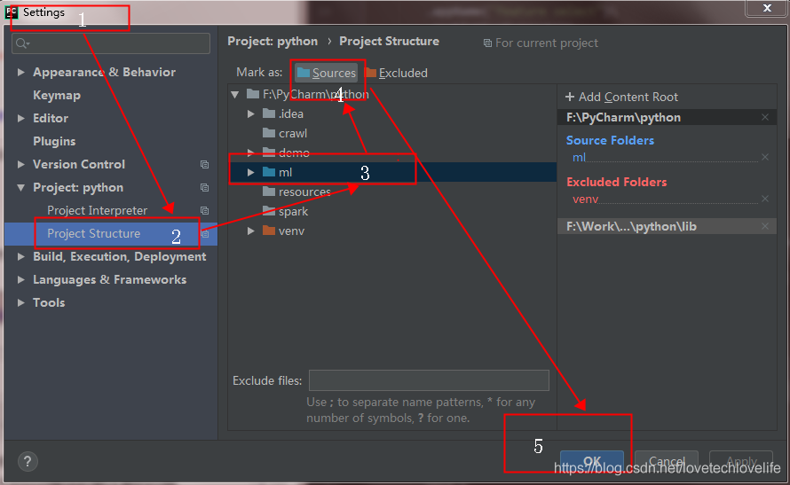

模块依赖问题
因为平时写Spark应用程序基本都用Scala，之前有写过一段pyspark，但是都是在一个类或模块中实现所有的功能，也就自然没有遇到过要在一个模块中导入(import)自己写的另一个模块。这次遇到了，也发现了关于import模块时要注意的问题。
1. PyCharm执行
要注意的是，当在一个模块(假如是module1)中导入相同目录(假设是demo)下的另一个模块(module2)中的变量list时，想当然的以为应该是这样导入 ——> from module2 import list，但其实是这样 ——> from demo.module2 import list，就是你要加上要导入模块的上级目录才行，如果想要实现这样导入 —— from module2 import list，需要进行一些设置，如下：

还有另外一种可以不进行设置的方式 ——> from .module2 import list，就是在要导入的模块的前面加一个.点表示导入的是同级目录下的模块。
2. 集群提交
提交命令：
1 | spark-submit \ |
因为spark任务在运行的时候一般都是分布式的，会先把程序代码module1.py发送到各个executor，而 module1.py 依赖模块 module2.py，那么也就需要把 module2.py 分发到各个executor节点，这就需要用到参数选项–py-files。
在提交到远程集群执行的时候，并不需要像在本地那样还需要注意被导入模块的路径问题，只需要from module2 import list即可。